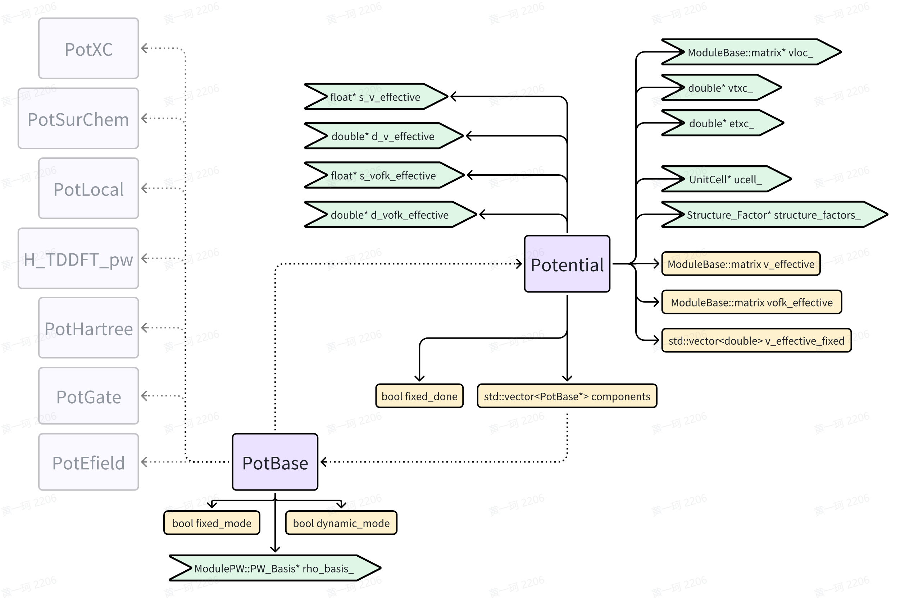
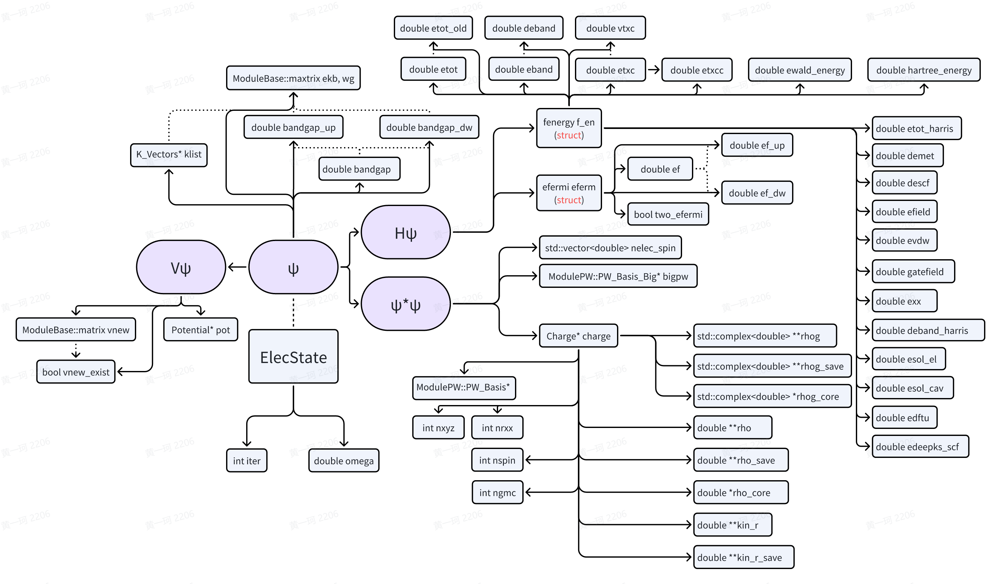
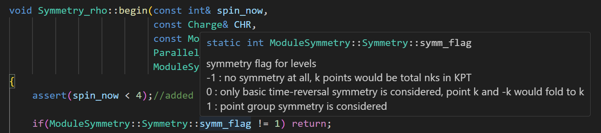

Introduction to ABACUS: Path to PW calculation - Part 9
作者：黄一珂，邮箱：huangyk@aisi.ac.cn
审核：陈默涵，邮箱：mohanchen@pku.edu.cn
飞书链接：Introduction to ABACUS: Path to PW calculation - Part 9
📃写在前面
- 不脱离代码——避免读者看完手册后对代码没有一丁点概念
- 不堆砌代码解释——避免平庸的代码解释，努力兼顾拉近读者和代码距离的同时，做到提纲挈领，不逐行复制代码后进行停留在代码语义上的解释
🤔Walk out! From now on, more codes and fewer explanations, try to understand more ABACUS codes on your own!
Relax_Driver::relax_driver()
void Relax_Driver::relax_driver(ModuleESolver::ESolver *p_esolver)
{
....//omit timer and record
if (GlobalV::CALCULATION == "relax" || GlobalV::CALCULATION == "cell-relax")
{....}
this->istep = 1;
int force_step = 1; // pengfei Li 2018-05-14
int stress_step = 1;
bool stop = false;
while (istep <= GlobalV::RELAX_NMAX && !stop)
{
....//omit timer
if (GlobalV::OUT_LEVEL == "ie"
&& (GlobalV::CALCULATION == "relax" || GlobalV::CALCULATION == "cell-relax" || GlobalV::CALCULATION == "scf"
|| GlobalV::CALCULATION == "nscf"))
{....}
p_esolver->Run(istep - 1, GlobalC::ucell);
考虑到我们目前仅考虑 pw-scf 的情况，因此跳过第一个 if 判断。GlobalV::RELAX_NMAX 的值在 global_variable.cpp 中被初始化为 20，因此忽略关于 OUT_LEVEL 的判断，来到
p_esolver->Run(istep - 1, GlobalC::ucell);
目前 p_esolver 实际为 ESolver_KS_PW 类，上级基类分别为 ESolver_KS, ESolver_FP, ESolver。Run() 函数在 ESolver 类中被声明为纯虚函数，由于 ESolver_KS_PW 和 ESolver_FP 中并无 Run() 函数定义，ESolver_KS 中定义的 Run() 函数
namespace ModuleESolver
{
template<typename FPTYPE, typename Device = psi::DEVICE_CPU>
class ESolver_KS : public ESolver_FP
{
public:
....
virtual void Run(const int istep, UnitCell& cell) override;
会被调用。
ESolver_KS::Run()
- Source code: ESolver_KS::Run()
- Visualization:

Beforescf
beforescf() 函数在 ESolver_KS 中为虚函数，实际调用 ESolver_KS_PW 该派生类对函数的重载。
namespace ModuleESolver
{
template<typename FPTYPE, typename Device = psi::DEVICE_CPU>
class ESolver_KS : public ESolver_FP
{
....
protected:
// Something to do before SCF iterations.
virtual void beforescf(int istep) {};
Build Hamilton operator
我们省略 relax 和 vcrelax 的部分，来到 p_hamilt 这一属于 hmilt::HamiltPW<FPTYPE, Device> 类指针的内存刷新（delete and new）：
template <typename FPTYPE, typename Device>
void ESolver_KS_PW<FPTYPE, Device>::beforescf(int istep)
{
....
if (GlobalC::ucell.cell_parameter_updated) {....}
if (GlobalC::ucell.ionic_position_updated) {....}
if (this->p_hamilt != nullptr)
{
delete reinterpret_cast<hamilt::HamiltPW<FPTYPE, Device>*>(this->p_hamilt);
this->p_hamilt = nullptr;
}
// allocate HamiltPW
if (this->p_hamilt == nullptr)
{
this->p_hamilt = new hamilt::HamiltPW<FPTYPE, Device>(this->pelec->pot, this->pw_wfc, &this->kv);
}
auto vdw_solver = vdw::make_vdw(GlobalC::ucell, INPUT);
if (vdw_solver != nullptr) this->pelec->f_en.evdw = vdw_solver->get_energy();
....
}
这一刷新操作使得 HamiltPW 的构造函数再次被调用，构造 Hamiltonian 算符：
template <typename FPTYPE, typename Device>
HamiltPW<FPTYPE, Device>::HamiltPW(elecstate::Potential* pot_in, ModulePW::PW_Basis_K* wfc_basis, K_Vectors* pkv)
{
this->classname = "HamiltPW";
const auto tpiba2 = static_cast<FPTYPE>(GlobalC::ucell.tpiba2);
const auto tpiba = static_cast<FPTYPE>(GlobalC::ucell.tpiba);
const int* isk = pkv->isk.data();
const FPTYPE* gk2 = wfc_basis->get_gk2_data<FPTYPE>();
if (GlobalV::T_IN_H)
{
Operator<std::complex<FPTYPE>, Device>* ekinetic = new Ekinetic<OperatorPW<FPTYPE, Device>>(....);
if(this->ops == nullptr) this->ops = ekinetic;
else this->ops->add(ekinetic);
}
if (GlobalV::VL_IN_H)
{
std::vector<std::string> pot_register_in;
if (GlobalV::VION_IN_H) pot_register_in.push_back("local");
if (GlobalV::VH_IN_H) pot_register_in.push_back("hartree");
pot_register_in.push_back("xc");
if (GlobalV::imp_sol) pot_register_in.push_back("surchem");
if (GlobalV::EFIELD_FLAG) pot_register_in.push_back("efield");
if (GlobalV::GATE_FLAG) pot_register_in.push_back("gatefield");
if(pot_register_in.size()>0)
{
pot_in->pot_register(pot_register_in);
Operator<std::complex<FPTYPE>, Device>* veff = new Veff<OperatorPW<FPTYPE, Device>>(....);
if(this->ops == nullptr) this->ops = veff;
else this->ops->add(veff);
Operator<std::complex<FPTYPE>, Device>* meta = new Meta<OperatorPW<FPTYPE, Device>>(....);
this->ops->add(meta);
}
}
if (GlobalV::VNL_IN_H)
{
Operator<std::complex<FPTYPE>, Device>* nonlocal = new Nonlocal<OperatorPW<FPTYPE, Device>>(....);
if(this->ops == nullptr) this->ops = nonlocal;
else this->ops->add(nonlocal);
}
}
稍加观察就可以发现，T_IN_H、VL_IN_H、VION_IN_H 等量控制了 Hamilton 算符中包含项的多少：https://abacus.deepmodeling.com/en/latest/advanced/input_files/input-main.html#variables-useful-for-debugging
HamiltPW 和其基类 Hamilt 包含数据成员关系如下：

Operator (ops)在 Hamilt 中的存储方式类似链表：

Operator 类
Operator 类中各算符继承关系如下：

其中算符可能具有部分共享变量。在 HamiltPW 的构造函数中，省略了动能算符、有效势能算符、Meta 算符和非局域算符的构造函数形参表，其具体内容分别为：
Kinetic term: the kinetic operator
template <typename FPTYPE, typename Device>
HamiltPW<FPTYPE, Device>::HamiltPW(elecstate::Potential* pot_in, ModulePW::PW_Basis_K* wfc_basis, K_Vectors* pkv)
{
....
if (GlobalV::T_IN_H)
{
....
Operator<std::complex<FPTYPE>, Device>* ekinetic
= new Ekinetic<OperatorPW<FPTYPE, Device>>(tpiba2,
gk2,
wfc_basis->nks,
wfc_basis->npwk_max);
//source/module_basis/module_pw/pw_basis_k.cpp: line 351
template <>
float * PW_Basis_K::get_gk2_data() const {
return this->s_gk2;
}
template <>
double * PW_Basis_K::get_gk2_data() const {
return this->d_gk2;
}
//line 246, in function PW_Basis_K::collect_local_pw()
this->d_gk2 = this->gk2;
//line 217, in function PW_Basis_K::collect_local_pw()
this->gk2[ik * npwk_max + igl] = (f+kv) * (this->GGT * (f+kv));
template<typename FPTYPE, typename Device>
Ekinetic<OperatorPW<FPTYPE, Device>>::Ekinetic(
FPTYPE tpiba2_in,
const FPTYPE* gk2_in,
const int gk2_row,
const int gk2_col)
{
this->classname = "Ekinetic";
this->cal_type = pw_ekinetic;
this->tpiba2 = tpiba2_in;
this->gk2 = gk2_in;
this->gk2_row = gk2_row;
this->gk2_col = gk2_col;
this->device = psi::device::get_device_type<Device>(this->ctx);
if( this->tpiba2 < 1e-10 || this->gk2 == nullptr) {
ModuleBase::WARNING_QUIT("EkineticPW", "Constuctor of Operator::EkineticPW is failed, please check your code!");
}
}
Potential terms
Review: Potential类对象的初始化在ESolver_KS_PW::Init()（link）
template <typename FPTYPE, typename Device>
void ESolver_KS_PW<FPTYPE, Device>::Init(Input& inp, UnitCell& ucell)
{
....
if (this->pelec->pot == nullptr)
{
this->pelec->pot = new elecstate::Potential(this->pw_rho,
&GlobalC::ucell,
&(GlobalC::ppcell.vloc),
&(this->sf),
&(this->pelec->f_en.etxc),
&(this->pelec->f_en.vtxc));
}
....
}

其中 Potential::v_effective_fixed 和 Potential::v_effective 均按照所分发得到实空间格点数量进行内存申请（Introduction to ABACUS: Path to PW calculation - Part 7），但 nrxx 暗示着已经是一维化的数组，而并不直接保持(x, y, z)的形式访问：
//source/module_elecstate/potentials/potential_new.cpp Potential::Potential() line 16
namespace elecstate
{
Potential::Potential(....
// allocate memory for Potential.
this->allocate();
}
....
/*------------------------------------------------------------------------------------*/
//source/module_elecstate/potentials/potential_new.cpp Potential::allocate()
this->v_effective_fixed.resize(nrxx);
this->v_effective.create(GlobalV::NSPIN, nrxx);
.... // memory record omitted
if (elecstate::get_xc_func_type() == 3 || elecstate::get_xc_func_type() == 5)
{
this->vofk_effective.create(GlobalV::NSPIN, nrxx);
.... // memory record omitted
Effective potential operator
🤔C++ programming topic: polymorphism
Potentialis a good example illustrating the use of polymorphism. You can find a base class pointer is created and then used to point to a derived class object.
template <typename FPTYPE, typename Device>
HamiltPW<FPTYPE, Device>::HamiltPW(elecstate::Potential* pot_in, ModulePW::PW_Basis_K* wfc_basis, K_Vectors* pkv)
{
....
if(pot_register_in.size()>0)
{
....
pot_in->pot_register(pot_register_in);
Operator<std::complex<FPTYPE>, Device>* veff
= new Veff<OperatorPW<FPTYPE, Device>>(isk,
pot_in->get_v_effective_data<FPTYPE>(),
pot_in->get_effective_v().nr,
pot_in->get_effective_v().nc,
wfc_basis);
....
void Potential::pot_register(std::vector<std::string>& components_list)
{
if (this->components.size() > 0)
{
for (auto comp: this->components) delete comp;
this->components.clear();
}
for (auto comp: components_list)
{
PotBase* tmp = this->get_pot_type(comp);
this->components.push_back(tmp);
}
this->fixed_done = false;
}
PotBase* Potential::get_pot_type(const std::string& pot_type)
{
ModuleBase::TITLE("Potential", "get_pot_type");
if (pot_type == "local")
{
return new PotLocal(this->vloc_, &(this->structure_factors_->strucFac), this->rho_basis_);
}
else if (pot_type == "hartree")
{
return new PotHartree(this->rho_basis_);
}
else if (pot_type == "xc")
{
return new PotXC(this->rho_basis_, this->etxc_, this->vtxc_, &(this->vofk_effective));
}
else if (pot_type == "surchem")
{
return new PotSurChem(this->rho_basis_,
this->structure_factors_,
this->v_effective_fixed.data(),
&GlobalC::solvent_model);
}
else if (pot_type == "efield")
{
return new PotEfield(this->rho_basis_, this->ucell_, GlobalV::DIP_COR_FLAG);
}
else if (pot_type == "gatefield")
{
return new PotGate(this->rho_basis_, this->ucell_);
}
....
}
//source/module_elecstate/potentials/potential_new.cpp line 251
template <>
double * Potential::get_v_effective_data()
{
return this->v_effective.nc > 0 ? this->d_v_effective : nullptr;
}
template <typename FPTYPE, typename Device>
Veff<OperatorPW<FPTYPE, Device>>::Veff(const int* isk_in,
const FPTYPE* veff_in,
const int veff_row,
const int veff_col,
const ModulePW::PW_Basis_K* wfcpw_in)
{
this->classname = "Veff";
this->cal_type = pw_veff;
this->isk = isk_in;
this->veff = veff_in;
//note: "veff = nullptr" means that this core does not treat potential but still treats wf.
this->veff_row = veff_row;
this->veff_col = veff_col;
this->wfcpw = wfcpw_in;
resmem_complex_op()(this->ctx, this->porter, this->wfcpw->nmaxgr, "Veff<PW>::porter");
resmem_complex_op()(this->ctx, this->porter1, this->wfcpw->nmaxgr, "Veff<PW>::porter1");
if (this->isk == nullptr || this->wfcpw == nullptr) {
ModuleBase::WARNING_QUIT("VeffPW", "Constuctor of Operator::VeffPW is failed, please check your code!");
}
}
meta-GGA operator
Operator<std::complex<FPTYPE>, Device>* meta
= new Meta<OperatorPW<FPTYPE, Device>>(tpiba,
isk,
pot_in->get_vofk_effective_data<FPTYPE>(),
pot_in->get_effective_vofk().nr,
pot_in->get_effective_vofk().nc,
wfc_basis);
template <typename FPTYPE, typename Device>
Meta<OperatorPW<FPTYPE, Device>>::Meta(FPTYPE tpiba_in,
const int* isk_in,
const FPTYPE* vk_in,
const int vk_row,
const int vk_col,
const ModulePW::PW_Basis_K* wfcpw_in)
{
this->classname = "Meta";
this->cal_type = pw_meta;
this->isk = isk_in;
this->tpiba = tpiba_in;
this->vk = vk_in;
this->vk_row = vk_row;
this->vk_col = vk_col;
this->wfcpw = wfcpw_in;
resmem_complex_op()(this->ctx, this->porter, this->wfcpw->nmaxgr, "Meta<PW>::porter");
if(this->isk == nullptr || this->tpiba < 1e-10 || this->wfcpw == nullptr)
{
ModuleBase::WARNING_QUIT("MetaPW", "Constuctor of Operator::MetaPW is failed, please check your code!");
}
}
Non-local potential operator
template <typename FPTYPE, typename Device>
Nonlocal<OperatorPW<FPTYPE, Device>>::Nonlocal(const int* isk_in,
const pseudopot_cell_vnl* ppcell_in,
const UnitCell* ucell_in,
const ModulePW::PW_Basis_K* wfc_basis)
{
this->classname = "Nonlocal";
this->cal_type = pw_nonlocal;
this->wfcpw = wfc_basis;
this->isk = isk_in;
this->ppcell = ppcell_in;
this->ucell = ucell_in;
this->deeq = this->ppcell->template get_deeq_data<FPTYPE>();
this->deeq_nc = this->ppcell->template get_deeq_nc_data<FPTYPE>();
this->vkb = this->ppcell->template get_vkb_data<FPTYPE>();
if( this->isk == nullptr || this->ppcell == nullptr || this->ucell == nullptr)
{
ModuleBase::WARNING_QUIT("NonlocalPW", "Constuctor of Operator::NonlocalPW is failed, please check your code!");
}
}
之后到达 vdw 能量计算函数 vdw::make_vdw()。
Van der Waals calculation: vdw class
template <typename FPTYPE, typename Device>
void ESolver_KS_PW<FPTYPE, Device>::beforescf(int istep)
{
....
auto vdw_solver = vdw::make_vdw(GlobalC::ucell, INPUT);
if (vdw_solver != nullptr)
{
this->pelec->f_en.evdw = vdw_solver->get_energy();
}
....
code
查看 make_vdw() 函数，发现其返回 std::unique_ptr<Vdw> 类对象，即 Vdw 实例化的 std::unique_ptr 智能指针。智能指针的优点是会在程序结束时自动释放内存空间，而不会产生内存泄漏问题。
为简单起见，这里我们首先不考虑 vdw 项贡献，因此我们在 INPUT 文件中对 vdw_corr 关键词赋值为判断条件之外的参数是，make_vdw 将返回空指针 nullptr，因此接下来的复制操作不会被执行，f_en.evdw 维持默认值 0。
std::unique_ptr<Vdw> make_vdw(const UnitCell &ucell, const Input &input)
{
if (ucell.nat < 2 && input.vdw_method != "none")
{
ModuleBase::WARNING("VDW", "Only one atom in this system, and will not do the calculation of VDW");
return nullptr;
}
else if (input.vdw_method == "d2")
{
std::unique_ptr<Vdwd2> vdw_ptr = make_unique<Vdwd2>(ucell);
vdw_ptr->parameter().initial_parameters(input);
vdw_ptr->parameter().initset(ucell);
return vdw_ptr;
}
else if (input.vdw_method == "d3_0" || input.vdw_method == "d3_bj")
{
std::unique_ptr<Vdwd3> vdw_ptr = make_unique<Vdwd3>(ucell);
vdw_ptr->parameter().initial_parameters(input);
return vdw_ptr;
}
else return nullptr;
}
std::vector, std::map 和 std::unordered_map 与智能指针简介
基础的 C++ 知识可以知道，数组和指针等价，尤其依靠一维指针来实现长度可变的一维数组，对于一维以上也是同理。然而，（裸）指针的使用具有较大的内存泄漏风险，且涉及元素访问的操作均需要自行实现。使用 std::vector 这一标准库容器可以对这种应用需求进行替代。对比（裸）指针，std::vector 具有以下优点（generated by Chat-AISI）：
There are several advantages of using
std::vectorcompared to a bare pointer:
- Dynamic memory management:
std::vectorautomatically manages the memory allocation and deallocation for you, so you don't have to worry about manually allocating and deallocating memory. - Automatic resizing:
std::vectorcan automatically resize itself when new elements are added or removed, which makes it more convenient to use than a bare pointer. - Bounds checking:
std::vectorprovides bounds checking, which means that it will throw an exception if you try to access an element that is out of bounds. This can help prevent bugs and improve the safety of your code. - Iterators:
std::vectorprovides iterators that allow you to easily traverse the elements in the vector. This can make it easier to write algorithms that operate on the elements of the vector. - Standard library algorithms:
std::vectoris part of the C++ standard library, which means that it can be used with a wide range of standard library algorithms. This can make it easier to write code that is more concise and easier to read.
同理 std::map 数据类型提供了支持两种数据类型不同的变量间 1-1 映射关系的批量存储，而 std::unordered_map 额外支持了基于 key-value pair 的乱序访问（类似于 Python 中的字典数据结构）。
指针的常见应用场景之二便是保存对象的内存地址，尤其对于 OOP 场景，我们希望通过内存地址来访问已经建立的 std::vector 对象，而不是直接进行深拷贝，以降低内存的消耗。然而，每当 std::vector 等上述容器进行扩容时，都会在内存中重新申请空间，即是说 std::vector 不具有固定的内存地址。为了使得指针能够按照指向的内容来进行锁定，我们可以使用智能指针。
智能指针是 C++11 开始支持的（新 ps.：但 C++11 本身已经不新了）特性，常见类型有两种，分别为 std::unique_ptr 和 std::shared_ptr。这两种智能指针的区别为是否允许多个指针对内存进行访问，前者不允许，后者允许。两种指针的使用方式和普通指针保持大致相同，但创建操作变更为 make_unique 或 make_shared（examples provided by Chat-AISI）：
#include <memory>
int main() {
// Create a unique_ptr to an integer and initialize it with a new integer
std::unique_ptr<int> myInt = std::make_unique<int>(42);
// Use the unique_ptr to access the integer value
std::cout << "The value of myInt is: " << *myInt << std::endl;
// When the unique_ptr goes out of scope, it will automatically delete the integer
return 0;
}
#include <memory>
int main() {
// Create a shared_ptr to an integer and initialize it with a new integer
std::shared_ptr<int> myInt = std::make_shared<int>(42);
// Create another shared_ptr to the same integer
std::shared_ptr<int> myInt2 = myInt;
// Use the shared_ptrs to access the integer value
std::cout << "The value of myInt is: " << *myInt << std::endl;
std::cout << "The value of myInt2 is: " << *myInt2 << std::endl;
// When the last shared_ptr goes out of scope, it will automatically delete the integer
return 0;
}
我们可以使用如下方式以 std::shared_ptr 绑定一个基于 std::vector 实现的矩阵：
#include <vector>
#include <memory>
std::vector<
std::vector<double>> M;
for (int irow=0; irow<dim; irow++)
{
std::<double> OneRow;
for (int icol=0; icol<dim; icol++)
{
if (irow==icol) OneRow.push_back(1);
else OneRow.push_back(0);
}
M.push_back(OneRow);
OneRow.clean();
}
std::shared_ptr<
std::vector<
std::vector<double>>> M_ptr = make_shared<
std::vector<
std::vector<double>>>(M);
Ewald
关于最基本的 Ewald 的原理已经在上篇中提到。
template <typename FPTYPE, typename Device>
void ESolver_KS_PW<FPTYPE, Device>::beforescf(int istep)
{
....
this->pelec->f_en.ewald_energy = H_Ewald_pw::compute_ewald(GlobalC::ucell, this->pw_rho, this->sf.strucFac);
....
}
ElecState::init_scf()：review the philosophy describing electronic state
template <typename FPTYPE, typename Device>
void ESolver_KS_PW<FPTYPE, Device>::beforescf(int istep)
{
....
this->pelec->init_scf(istep, this->sf.strucFac);
....
}
ElecState 类已经出现多次，在正式的对角化开始前，我们有必要完全了解 ElecState 类如何被设计，以描述电子态（Electronic State）：

🤔批判式思考 寻找可能的冗余变量！
void ElecState::init_scf(const int istep, const ModuleBase::ComplexMatrix& strucfac)
{
this->charge->set_rho_core(strucfac);
if (istep == 0)
{
this->charge->init_rho(this->eferm, strucfac, this->bigpw->nbz, this->bigpw->bz);
}
this->charge->renormalize_rho();
this->pot->init_pot(istep, this->charge);
}
Charge::set_rho_core()
void Charge::set_rho_core(
const ModuleBase::ComplexMatrix &structure_factor
)
{
....//omit timer and comments
bool bl = false;
for (int it = 0; it<GlobalC::ucell.ntype; it++)
{
if (GlobalC::ucell.atoms[it].ncpp.nlcc)
{
bl = true;
break;
}
}
if (!bl)
{
....//omit timer
return;
}
我们首先不考虑 noncolinear 情况，因此该函数直接返回。
Charge::init_rho()
我们考虑 calculation = 'scf' 的情况，且 init_chg 为默认值 'atomic'，则在 Input::Default2() 函数中，init_chg 关键字不会被因 calculation = 'nscf' 等条件的满足自动转换为 init_chg = 'file'，
else if (calculation == "nscf" || calculation == "get_S")
{
....//omit other cases....
if (init_chg != "file")
{
init_chg = "file";
ModuleBase::GlobalFunc::AUTO_SET("init_chg", init_chg);
}
}
因此在 Charge::init_rho() 函数中，实际执行操作很简单：
void Charge::init_rho(elecstate::efermi& eferm_iout, const ModuleBase::ComplexMatrix& strucFac, const int& nbz, const int& bz)
{
....//omit timer
if (GlobalV::init_chg == "atomic") // mohan add 2007-10-17
{
this->atomic_rho(GlobalV::NSPIN, GlobalC::ucell.omega, rho, strucFac, GlobalC::ucell);
if (XC_Functional::get_func_type() == 3 || XC_Functional::get_func_type() == 5)
{
const double pi = 3.141592653589790;
const double fact = (3.0 / 5.0) * pow(3.0 * pi * pi, 2.0 / 3.0);
for (int is = 0; is < GlobalV::NSPIN; ++is)
{
for (int ir = 0; ir < this->rhopw->nrxx; ++ir)
{
kin_r[is][ir] = fact * pow(std::abs(rho[is][ir]) * GlobalV::NSPIN, 5.0 / 3.0) / GlobalV::NSPIN;
}
}
}
}
....// omit other cases
#ifdef __MPI
this->init_chgmpi(nbz, bz);
#endif
}
Charge::atomic_rho()
Charge::atomic_rho() 函数初始化了不同自旋分量的电荷密度。考虑每个原子从赝势中读取电荷密度为$\rho^\alpha(\mathbf{r})$，则所有原子的电荷密度加和为：
其 Fourier transform：
令，并在下文中标记：
但对 nspin = 2 和 nspin = 4 的情况要更加复杂：

将在每个 processor 上进行 iFFT，
void Charge::atomic_rho(const int spin_number_need, const double& omega, double** rho_in, const ModuleBase::ComplexMatrix& strucFac, const UnitCell& ucell) const // Peize Lin refactor 2021.04.08
{
....//omit superposition of atomic charges
for (int is = 0; is < spin_number_need; is++)
{
this->rhopw->recip2real(&rho_g3d(is, 0), rho_in[is]);
// decrete integral here
for (int ir = 0; ir < this->rhopw->nrxx; ++ir)
ne[is] += rho_in[is][ir];
ne[is] *= omega / (double)this->rhopw->nxyz;
#ifdef __MPI
Parallel_Reduce::reduce_double_pool(ne[is]);
#endif
....//omit things following
之后对 rho_in 进行 scale，GlobalV::nelec 在此处被赋值 →（Introduction to ABACUS: Path to PW calculation - Part 5）。
void Charge::atomic_rho(const int spin_number_need, const double& omega, double** rho_in, const ModuleBase::ComplexMatrix& strucFac, const UnitCell& ucell) const // Peize Lin refactor 2021.04.08
{
....//omit superposition of atomic charges, ifft to realspace saved in rho_in and electron number checking
ModuleBase::GlobalFunc::OUT(GlobalV::ofs_warning, "total electron number from rho", ne_tot);
ModuleBase::GlobalFunc::OUT(GlobalV::ofs_warning, "should be", GlobalV::nelec);
for (int is = 0; is < spin_number_need; ++is)
for (int ir = 0; ir < this->rhopw->nrxx; ++ir)
rho_in[is][ir] = rho_in[is][ir] / ne_tot * GlobalV::nelec;
....//omit timer and return
}
其余细节请自行阅读该函数：link。
🤔批判式思考
Charge::atomic_rho()函数中，对匿名函数的使用是否合理？
Charge::init_chgmpi()
该函数对每个 processor 分得实空间格点数量进行计算：
void Charge::init_chgmpi(const int& nbz, const int& bz)
{
// NPROC_IN_STOGROUP is 1 as default
if (GlobalV::NPROC_IN_STOGROUP % GlobalV::KPAR == 0) {....}
else
{
this->use_intel_pool = false;
delete[] rec; rec = new int[GlobalV::NPROC_IN_POOL];
delete[] dis; dis = new int[GlobalV::NPROC_IN_POOL];
const int ncxy = this->rhopw->nx * this->rhopw->ny;
for (int ip = 0; ip < GlobalV::NPROC_IN_POOL; ip++)
{
rec[ip] = this->rhopw->numz[ip] * ncxy;
dis[ip] = this->rhopw->startz[ip] * ncxy;
}
}
}
Charge::renormalize_rho()
void Charge::renormalize_rho(void)
{
....//omit outputs
const double sr = this->sum_rho();
const double normalize_factor = GlobalV::nelec / sr;
for (int is = 0; is < nspin; is++)
{
for (int ir = 0; ir < nrxx; ir++)
{
rho[is][ir] *= normalize_factor;
}
}
....//omit outputs
}
, ，实际为离散积分。
🤔批判式思考 寻找在
Charge类中对离散积分实现的冗余
Potential::init_pot()
void Potential::init_pot(int istep, const Charge* chg)
{
....//omit timer
assert(istep >= 0);
// fixed components only calculated in the beginning of SCF
this->fixed_done = false;
this->update_from_charge(chg, this->ucell_);
....//omit timer and return
}
Potential::update_from_charge()
void Potential::update_from_charge(const Charge* chg, const UnitCell* ucell)
{
ModuleBase::TITLE("Potential", "update_from_charge");
ModuleBase::timer::tick("Potential", "update_from_charge");
if (!this->fixed_done)
{
this->cal_fixed_v(this->v_effective_fixed.data());
this->fixed_done = true;
}
....//omit gpu and single precision support
this->cal_v_eff(chg, ucell, this->v_effective);
....//omit timer and return
}
Potential::cal_fixed_v()
void Potential::cal_fixed_v(double* vl_pseudo)
{
....//omit timer
this->v_effective_fixed.assign(this->v_effective_fixed.size(), 0.0);
//v_effective_fixed's datatype is std::vector<double>
for (size_t i = 0; i < this->components.size(); i++)
{
//components' datatype is std::vector<elecstate::PotBase *>
if (this->components[i]->fixed_mode)
{
this->components[i]->cal_fixed_v(vl_pseudo);
}
}
....//omit timer
}
即此时将所有 v_effective_fixed 中元素设置为 0。
Potential::cal_v_eff()
void Potential::cal_v_eff(const Charge* chg, const UnitCell* ucell, ModuleBase::matrix& v_eff)
{
....//omit timer
int nspin_current = this->v_effective.nr;
int nrxx = this->v_effective.nc;
// first of all, set v_effective to zero.
this->v_effective.zero_out();
// add fixed potential components
// nspin = 2, add fixed components for all
// nspin = 4, add fixed components on first colomn
for (int i = 0; i < nspin_current; i++)
{
if (i == 0 || nspin_current == 2)
{
ModuleBase::GlobalFunc::COPYARRAY(this->v_effective_fixed.data(), this->get_effective_v(i), nrxx);
}
}
// cal effective by every components
for (size_t i = 0; i < this->components.size(); i++)
{
if (this->components[i]->dynamic_mode) this->components[i]->cal_v_eff(chg, ucell, v_eff);
}
....//omit timer
}
也将 v_effective 中部分元素初始化为 0（对 nspin = 1 或 2，设置所有自旋分量的所有元素为 0，nspin = 4，设置 nspin 第一分量中所有元素为 0）。components 在 potential_new.h 中被声明为 PotBase 的 std::vector 容器，因此对于通过 register 压入的每一种 Potential，其 cal_v_eff() 都会调用不同的派生类实现（cal_v_eff() 在 PotBase 里是虚函数）。
以 Hartree term 举例，cal_v_eff() 计算了 Hartree term energy contribution：
void PotHartree::cal_v_eff(const Charge* chg, const UnitCell* ucell, ModuleBase::matrix& v_eff)
{
v_eff += H_Hartree_pw::v_hartree(*ucell, const_cast<ModulePW::PW_Basis*>(this->rho_basis_), v_eff.nr, chg->rho);
return;
}
ModuleBase::matrix H_Hartree_pw::v_hartree(const UnitCell &cell,
ModulePW::PW_Basis *rho_basis,
const int &nspin,
const double *const *const rho)
{
ModuleBase::TITLE("H_Hartree_pw", "v_hartree");
ModuleBase::timer::tick("H_Hartree_pw", "v_hartree");
std::vector<std::complex<double>> Porter(rho_basis->nmaxgr);
const int nspin0 = (nspin == 2) ? 2 : 1;
for (int is = 0; is < nspin0; is++)
{
#ifdef _OPENMP
#pragma omp parallel for schedule(static, 256)
#endif
for (int ir = 0; ir < rho_basis->nrxx; ir++)
Porter[ir] += std::complex<double>(rho[is][ir], 0.0);
}
rho_basis->real2recip(Porter.data(), Porter.data());
double ehart = 0.0;
std::vector<std::complex<double>> vh_g(rho_basis->npw);
#ifdef _OPENMP
#pragma omp parallel for reduction(+:ehart)
#endif
for (int ig = 0; ig < rho_basis->npw; ig++)
{
if (rho_basis->gg[ig] >= 1.0e-8)
{
const double fac = ModuleBase::e2 * ModuleBase::FOUR_PI / (cell.tpiba2 * rho_basis->gg[ig]);
ehart += (conj(Porter[ig]) * Porter[ig]).real() * fac;
vh_g[ig] = fac * Porter[ig];
}
}
Parallel_Reduce::reduce_double_pool(ehart);
ehart *= 0.5 * cell.omega;
H_Hartree_pw::hartree_energy = ehart;
rho_basis->recip2real(vh_g.data(), Porter.data());
ModuleBase::matrix v(nspin, rho_basis->nrxx);
if (nspin == 4)
{
#ifdef _OPENMP
#pragma omp parallel for schedule(static, 512)
#endif
for (int ir = 0; ir < rho_basis->nrxx; ir++)
v(0, ir) = Porter[ir].real();
}
else
{
#ifdef _OPENMP
#pragma omp parallel for collapse(2) schedule(static, 512)
#endif
for (int is = 0; is < nspin; is++)
for (int ir = 0; ir < rho_basis->nrxx; ir++)
v(is, ir) = Porter[ir].real();
}
....
return v;
}
Symmetry_rho
template <typename FPTYPE, typename Device>
void ESolver_KS_PW<FPTYPE, Device>::beforescf(int istep)
{
....
// Symmetry_rho should behind init_scf, because charge should be initialized first.
Symmetry_rho srho;
for (int is = 0; is < GlobalV::NSPIN; is++)
{
srho.begin(is, *(this->pelec->charge), this->pw_rho, GlobalC::Pgrid, this->symm);
}
}

As long as we can return, we return. ——woshuode
下篇我们将开始解读 beforescf() 之后，即 SCF 过程。